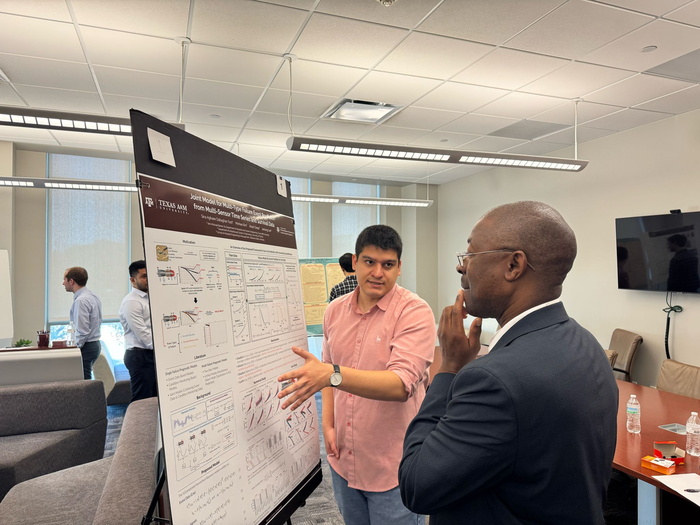
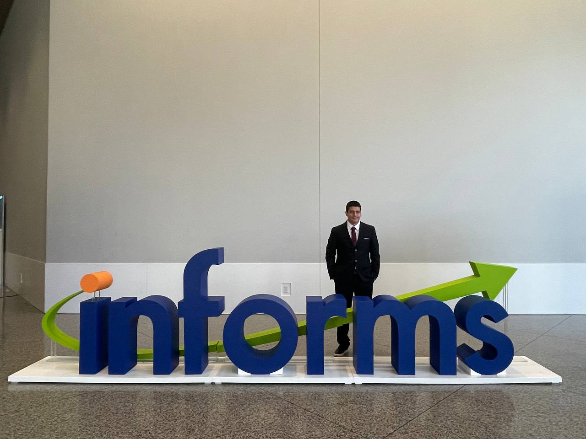

Conference Presentation
INFORMS Annual Meeting 2025
Moments from INFORMS 2025, including conference participation and the next stage of presenting my research trajectory.
Group photo: In the last photo, from left to right, are me, my PhD advisor Dr. Jaesung Lee, and my colleague and labmate, Tatthapong Srikitrungruang.
October 2025 | Atlanta, GA, USA


Poster Presentation
TAMU ISEN Poster Competition
Sharing my poster on multi-sensor and failure event prediction at the Texas A&M ISEN Poster Competition.
Discussion photo: The last photo shows me presenting my poster to Dr. Lewis Ntaimo, then head of the ISEN department and a judge in the competition.
March 2025 | College Station, TX, USA



Conference Presentation
INFORMS Annual Meeting 2024
Three moments from Seattle: presenting my work, representing the conference, and connecting with fellow researchers.
Group photo: In the last photo, from left to right, are me, my PhD advisor Dr. Jaesung Lee, and my colleague and labmate, Tatthapong Srikitrungruang.
October 2024 | Seattle, WA, USA

Poster Presentation
Zorich Reliability Workshop
Presenting poster work at Texas A&M's Zorich Reliability Workshop, an important early venue for discussing this research direction.
September 2024 | College Station, TX, USA